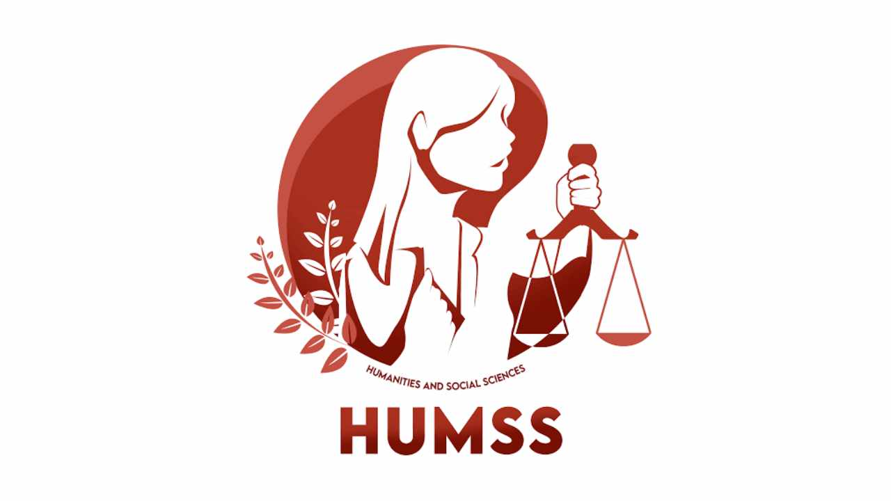

HUMSS
The HUMSS strand in senior high school is designed to effectively prepare students who seek to pursue a college degree in liberal education. HUMSS courses cover a variety of subjects, looking at the world and its people from various points of view. The learning activities are directed towards the development of critical thinking. HUMSS also focuses on developing your oral communication, media and information, and will hone your skills in reading and writing to a professional level. Because the HUMSS strand is intended for those who wish to explore careers in social sciences, this strand will involve a lot of research and presentation, making it a good preparation for their future careers as journalists, lawyers, teachers, politicians, writers, and psychologists.